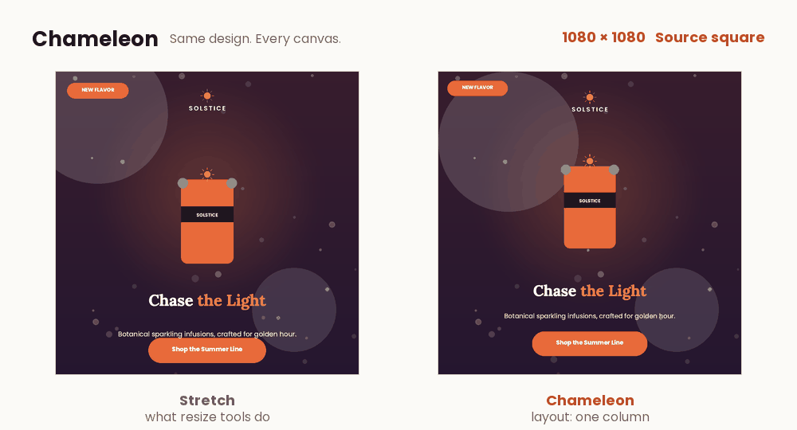

Same design.Every canvas.
Chameleon rebuilds a finished design for any size. It moves the furniture instead of stretching the photo.
Deterministic PythonRuns offlineEvery element kept
Stretching a design breaks it
A plain resize scales every element to the new shape. Here is the same poster, stretched to three common sizes.
Chameleon rebuilds it for the new canvas
Drag across the image. The left side is what a plain resize does. The right side is Chameleon: same elements, same copy, laid out again for the new shape.

Read the design, then rebuild it
No model and no network. Every step is plain code you can read, and each decision is written down so you can see why.
- InputA finished design and a new canvas size.v0.9 design JSON. Text, image and shape, with no labels.
- AnalyzeWorks out what each piece is.Headline, logo, product, button, badges and fine print, from geometry alone.
- MeasureSizes text the way the renderer draws it.The renderer's own fonts and wrap, at whole pixel sizes.
- Lay outBuilds several real layouts.Column, split, three columns, one row, headline-first row.
- ScoreKeeps the most readable one.Readability, hierarchy, space, collisions, reading order: eight terms.
- OutputSame elements, new layout.Design JSON with the same ids, plus a report with the reason for each choice.
Hard rules come first. A layout is only scored if it keeps every id, stays on the canvas, keeps images within 5% of their shape, leaves copy and fonts alone and fits every line of text.
There is always a safe answer. If anything fails, Chameleon falls back to a plain uniform fit that still passes every hard rule.
Tested on designs it never saw
Why not just use a resize tool
| Tool | Keeps proportions | Rearranges for the new shape | Every element kept | Explains each choice | No setup per design | Offline and open |
|---|---|---|---|---|---|---|
| Stretch to the new size | No | No | Yes | No | Yes | Yes |
| Fit or crop | Yes | No | No | No | Yes | Yes |
| Canva Magic Switch | Yes | Partly | Not stated | No | Yes | No |
| Adobe Express Resize | Yes | Partly | Not stated | No | Yes | No |
| Figma constraints | Yes | Once set up | Yes | No | No | No |
| Chameleon | Yes | Yes, scored | Yes, tested | Yes | Yes | Yes |
Canva and Adobe Express move elements automatically but don't publish how. The challenge brief calls resizing in Express an unsolved problem. Other rows come from public product pages as of October 2026. This compares features, not results.
Run it
Stage one runs every entry in the starter's Python Docker image. Run it the same way, or from a virtual environment.
Offline, with no network, like stage one.
$ docker build --platform linux/amd64 -t chameleon-engine . $ docker run --rm --network none \ -v $(pwd)/input:/app/input -v $(pwd)/output:/app/output chameleon-engine
Python 3.10 or newer, inside the starter repo.
$ pip install -r requirements.txt $ python -m engine.main # resize every task in input/ $ python -m studio.server # demo UI on http://127.0.0.1:8765
Limits
- Long copy stays smallEvery element stays visible and copy is never rewritten, so very long copy gets small type on tiny banners.
- Roles are inferredThe engine reads roles from size and position. An unusual design can be misread, and the result is then plainer.
- Our numbersThe figures above come from our own checks, not Adobe's scorer.